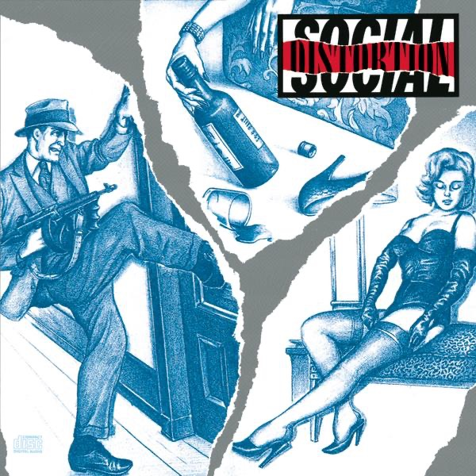

1990.
Cal State Fullerton.
Social Distortion
34 years · 8 shows
The Thread
1990
—
2024
0
/ 8 shows
“
Each one felt like checking in with an old friend
who’d weathered the same storms.

“Ball and Chain”
Social Distortion
, 1990
Social Distortion
morperhaus
Concerts
Full story at
concerts.morperhaus.org/liner-notes